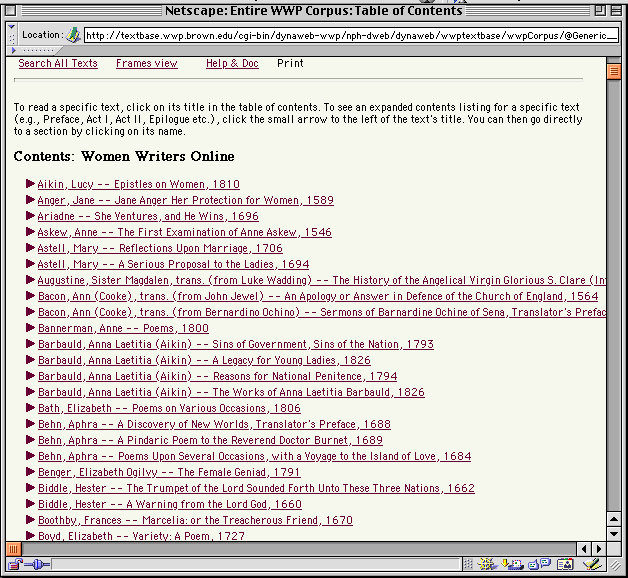
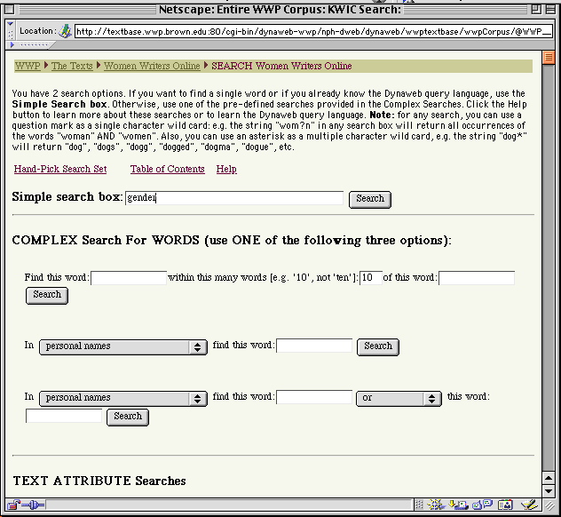
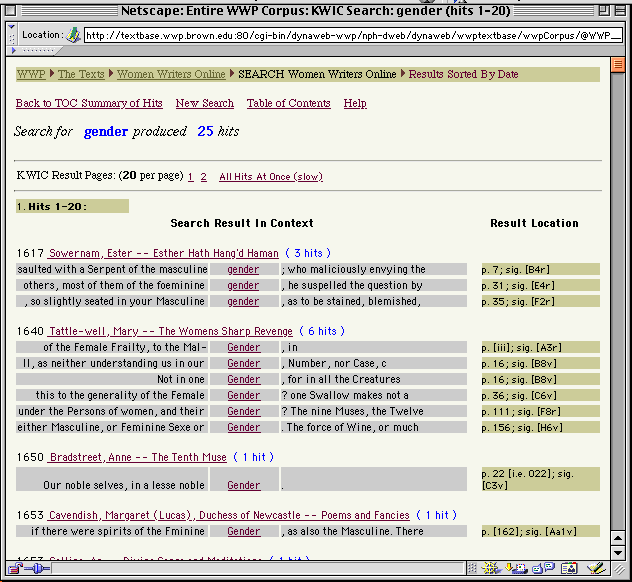
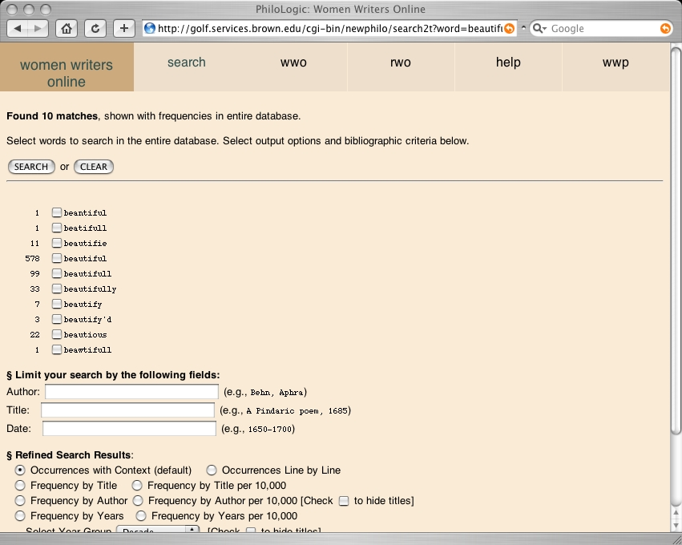
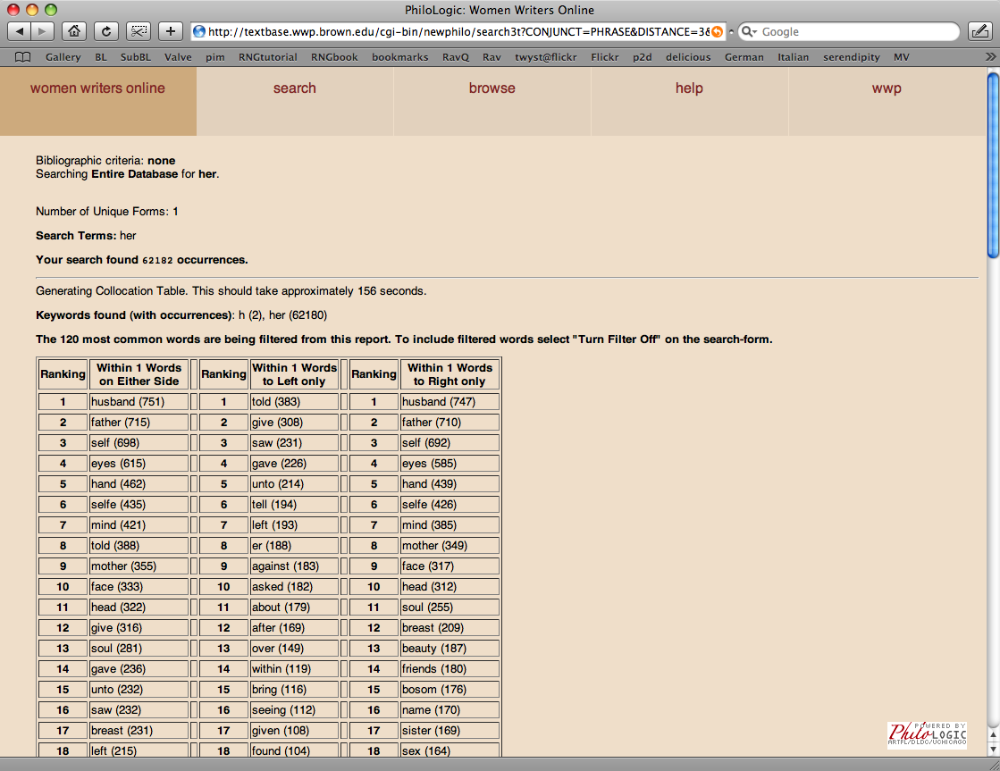
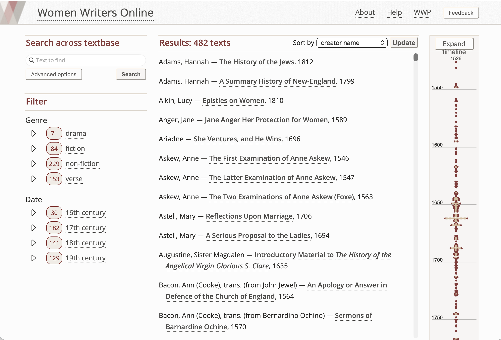
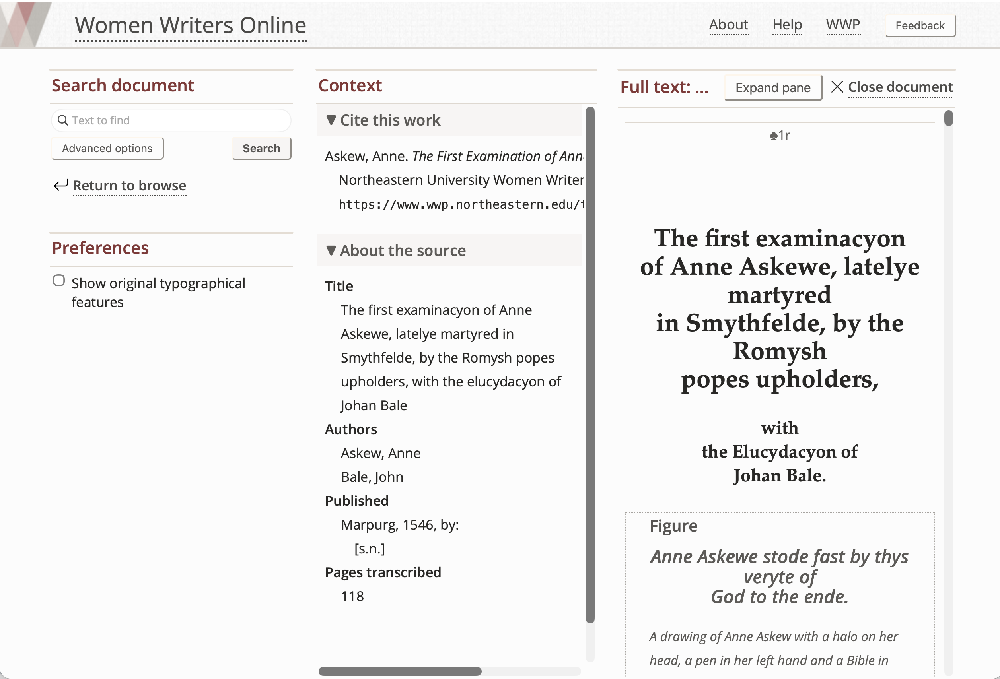
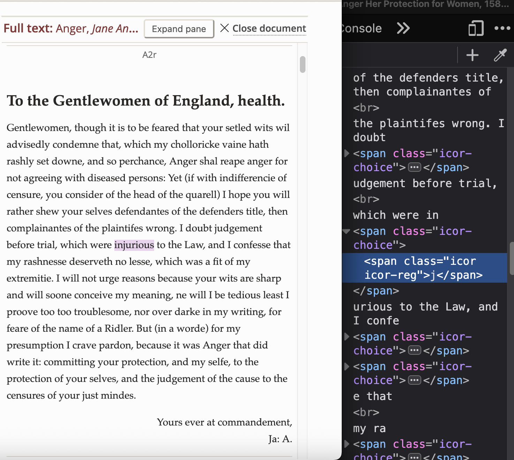
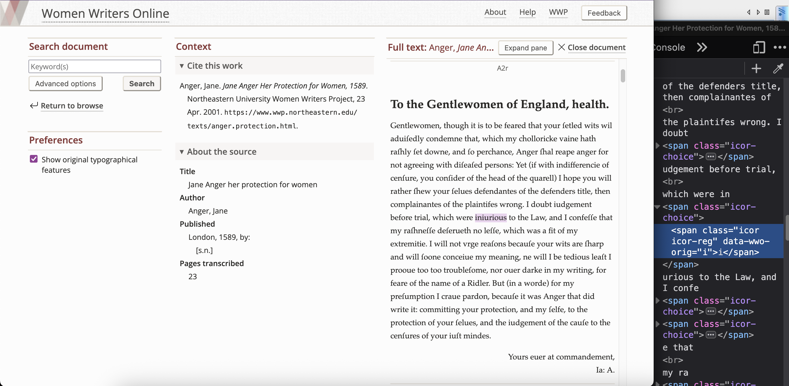

Balisage Paper: Synthesis and Sustainability: The Evolution of Markup and Toolsets in the Women Writers Project
Introduction
The Women Writers Project (WWP) has been working with text markup for nearly 40 years, as part of its founding mission to recover and republish the works of early women writers. Founded at nearly the same time as the establishment of the SGML standard and of the Text Encoding Initiative (TEI), the WWP has (by necessity) treated its work as a long-term active research undertaking, concerning not only these evolving markup systems but also the complex web of tools through which text markup can be created, assessed, and put into practical use for publication and analysis. The WWP has sought not only to build a stable, sustainable working system, but also to keep pace with new developments in both markup and tools, and explore their implications for research on early women’s writing. The intertwined history and co-evolution of these two sets of practices within the WWP’s many decades of work thus far offers a valuable perspective on the history of scholarly usage of markup in the humanities. This paper will explore the evolution of the WWP’s theory and practice of markup, from its pre-TEI origins to our present-day usage; as well as the evolution of the project’s publication systems, from its first forays into digital publication through DynaWeb to our planned implementation of a static-site framework that responds to the recommendations of the Endings Principles. We also consider the reciprocal pressure that tools and markup exert on each other, and the nuanced ways in which markup responds to the changing intellectual paradigms proposed by successive generations of tools and technologies (and vice versa).
Research and working relationships
It may be helpful at the outset to provide some context on the WWP’s research and working relationships, since those had a strong influence on how the project’s philosophy of markup and tools took shape. One important factor in that evolution is the project’s simultaneous focus on early modern women’s writing, digital text representation, and theories of markup. Scholars of early modern texts (and of women’s writing in particular) are particularly concerned with textual materiality, book history, and the ways in which texts circulate and are consumed and curated and discarded. As a result it is natural for them (and hence for the WWP) to make the connection from “tools” to “technologies” to “technologies of text and writing”: that is, to treat the book itself as a tool that has a very interesting potential relationship with the other “tools” we are concerned with. The idea that the text’s original embodiment and typography are expressive technologies (and hence that there is something “to be expressed” that is separate from those) clearly informs a lot of bibliographic theory, particularly some schools of thought that were still prominent when the WWP was getting started (for instance, the work of R.B. McKerrow and Thomas Tanselle) even as feminist and materialist approaches also contributed crucially to our thinking. The impact of those theoretical orientations on our markup is beyond the scope of this paper to explore, but it’s worth noting that the feminist angle on these ideas has been always present in some form in the WWP’s thinking, moving us to pay close attention to the significance of embodiment, to the role of patriarchal capital in mechanisms of dissemination, to the position of women in ecologies of textual circulation, etc.
The other important shaping factor is the WWP’s relationship with Brown’s Scholarly Technology Group, which was a notable aspect of the project’s incubation; the WWP was directly supported by the STG from 1994 until at least 2005 and was also an important contributor to STG’s research and development work. STG was an applied research and development group that also supported other projects, which presented WWP staff with opportunities for dialogue on central research questions and learning from other experiments. These included the Decameron Web, MonArch, and also a number of projects that used databases rather than XML markup, leading to debates about data modeling and knowledge organization that also informed the 2012 workshop on Knowledge Organization and Data Modeling. Starting in 2013, our relationship with Northeastern’s Digital Scholarship Group has been similar: the WWP is embedded in conversations that shed a varied theoretical and practical light on questions about tools and data.
Against the backdrop of that broad history, the topic of this paper was also shaped by some particular preoccupations that deserve mention. For a major early portion of the WWP’s history, tools felt optional. WWP staff remember Allen Renear in the early 1990’s saying “There will be tools…”, anticipating the ways in which the rich data we and other projects were creating would certainly prompt the creation of systems for using it. We also remember that a bit later, at the TEI conference in 1997, Jon Bosak anticipated the impact that XML would have in facilitating the creation of tools that would work across specific markup languages. But the WWP worked for a number of years in the absence of tools we now consider fundamental: an XML parser, XML validation, a formatted display, a means of electronic dissemination. The emphasis on the value of data itself in its “pure” state suggests interesting connections to post-Reformation aesthetic austerity: markup in the absence of tools feels interestingly akin to the “plain style,” to Puritanism. Obviously we were using some tools: the Brown University mainframe computer, a TN3270 terminal emulator, the Waterloo Script routines that formatted our texts for printing, the gigantic printer that printed out our texts for proofreading and circulation. But none of these really did anything to influence or even notice the modeling of our data: they were largely in support of the most basic aspects of the data creation process, not part of the expression or circulation of the data. So this “pre-tool” moment is useful as a way of scoping what we mean when we say “tools” in this context.
Tools also felt potentially at odds with our modeling purposes, and in a potentially conflictual relationship with the data, a concern we can also observe in early humanities computing discussions of data in relation to tools, perhaps especially in the markup community. By limiting what can be expressed about the data and by limiting users’ interactions with it, tools (from that perspective) create an impoverished experience of the data—especially problematic for a research group whose work is animated by a commitment to rich informational detail. Tools also risk pushing the project to make intellectual concessions in the design of the data, either because of assumptions the tool makes about the shape the data will take, or because of shortcuts and unwillingness to anticipate and handle truly challenging situations. This might take many forms; for instance:
-
by requiring elements or encodings that are otherwise unnecessary (e.g. numbered divisions, required headings, extra metadata elements);
-
by requiring that the data be “cut at different joints” or modeled in a different way, for instance in the handling of personal names, or of dates, or of textual apparatus;
-
by failing to support certain elements or encoding structures, and hence making it seem useless to include those in the data;
-
by acting in a broken way: for instance, adding white space around intra-word markup, thus making it burdensome to encode at this level.
These kinds of incentives and disincentives may have arisen especially vividly in
the incunabular days when tools for working with SGML/XML data were in their infancy.
Some of the solutions we would now consider (customizing the tool, choosing a different
tool) were not really on the table in those earliest moments. And other options, such
as creating an intermediate data format that aligns with the tools’ expectations,
became much easier once the XML programming environment and XSLT became available.
But overall, these issues raised concerns about “coding to the tool” and this is worth
unpacking a bit further. The idea of coding to the tool implicitly conveys that the
tool is structurally alien to our purposes in a way that “the data” is not. Data is
an expression of research ideas while a tool is a prosthesis; data is nuanced while
a tool is coarse-grained and clunky; data is nimble while a tool has inertia. Responding
to this, the digital humanities markup community has gravitated towards what Julia
Flanders and Fotis Jannidis call tool agnosticism
:
Tool agnosticism … enforces a kind of imaginative discipline, asking us to model our data to be as pure as possible an expression of the information we care about.
That discipline is a first and necessary move in a modeling process that does take tools into account, but resists situating them in positions of power or intellectual primacy.
In this context, if we consider a standard schema as a “tool” that is distinguishable from (and could be distant from) the core motivations of the data-creating researcher, this helps to illustrate why the TEI customization mechanism is so distinctive and so important within the DH intellectual ecology. From the outset, the TEI’s customizability acknowledged the intimate and detailed relationship between researchers and their data. But even beyond this, putting the customization mechanism within easy reach of all data creators (by baking it into the process of creating any schema at all, and by providing a web-based portal to do so) ensures a very close relationship indeed between the data and its creator. The schema is “your tool,” an extension of your ideas and of your data rather than separable from them or alien to them.
Once we get past this weird initial combination of skepticism and longing, there were also some very interesting questions to be asked, which have deeply informed the WWP’s thinking about markup and tools. One of these is the lines of research by Allen Renear and others (see for example Renear 2003) about how XML sits in relation to work in library and information science about the relation between more and less fully “materialized” representations of information, for instance in the Functional Requirements for Bibliographic Records (FRBR; FRBR 1998). Renear’s analysis suggests that tools are integral to that materialization. In FRBR terms, a “manifestation” of a conventional textual work is the “physical embodiment of an expression of a work” and has properties such as formatting, physical carrier/medium, and pagination. In the world of XML data, you can have a FRBR “expression” without a tool set (because expressions are still abstractions, and their properties can be described in XML data). But a “manifestation” requires taking some material action on the basis of the data, via a stylesheet or program that uses the markup to generate some kind of output that can possess these kinds of material properties, a PDF or a CD-ROM or a printout or a web site. Such output acts on the potential of the markup (to mark textual alternatives or semantic categories or whatever) by producing some tangible outcome. So this line of thinking about FRBR helped (among other things) to demonstrate how tightly and interestingly coupled tools and data really are.
To come at this from another angle: markup can be understood as potential information that carries a lot of surplus. Elena Pierazzo pointed out in a conference paper (Pierazzo 2006) that in order to preserve a digital edition, we need to preserve not only the marked up data but also the tool set through which the data was expressed and consumed, since that is what realizes the potential of the markup and makes a practical selection from the choices it offers. She proposed that the XSLT used to generate the disseminated version of a digital edition should be considered
not only an ancillary part of the editorial practice, a technology to be recalled after the finish of the scholar work (maybe committed to computer science people), but a part of the work committed to the editor himself/herself, able to support his/her tasks in monitoring the work step by step and able to produce different texts for different tastes, under the editorial control.
Evolution of the WWP’s theory and practice of markup
The WWP’s earliest markup practices were anchored in typesetting tools: student encoders starting in 1988 used Waterloo Script to capture functional textual units and formatting details. This approach was not guided by an explicit theory of markup, but it did embody certain assumptions about the role that markup could play in representing primary source documents (still a somewhat novel role for markup at that time). The now fundamental idea that markup should emphasize semantics rather than solely formatting was already present in the ways that Waterloo Script supported the identification of textual components (headings, paragraphs, etc.) in a way that was separable from their appearance, and this was especially crucial for primary source materials whose actual appearance on the page might vary considerably from text to text. And although this first stage of the WWP’s practice did not at all anticipate what the TEI would come to be, it did lay a groundwork that was at least amenable to an eventual transition to the TEI once P1 and P2 were available to demonstrate what a more thoroughly semantic approach could look like.
We can see early traces of this shift from typesetting (and an initial orientation towards ideas of a “digital facsimile”) in the WWP’s initial debates about whether a glyph in the source text should be represented using a character that resembles it visually, or represents it informationally. For instance, the earliest WWP transcriptions used the letter I to represent the numeral 1 (which in older typography has horizontal serifs) on the theory of greater visual correspondence to the original. This practice, which was quickly discarded, yielded a valuable clarification that seems obvious in retrospect: the appearance of the original glyph is separable from (and for the WWP, less informationally important than) the meaning of that glyph within the overall notational system. Interestingly, early modern typesetters themselves sometimes used a character that resembled the one intended—either accidentally (if a piece of type had made its way into the wrong box), or deliberately if they had run out of the appropriate character: for instance, the letters “u” and “n” (which when inverted are often indistinguishable from each other), the substitution of zero for a capital O, or the use of “vv” for “w”. In these cases, the WWP chose to retain the original glyphs (even though they were in effect a “facsimile” of something else) while also providing a regularized transcription reflecting the intended meaning.
The WWP’s thinking about these kinds of cases was shaped by
concerns among humanities scholars about loss of information about the physical source,
and a
resulting desire for visual fidelity to the text. Seen from that perspective (and
in the
absence of Unicode), the use of a capital I to represent a numeral 1 could appear
defensible
on visual grounds. But very early on, the project identified that resemblance (unsurprisingly)
as a fallacy—dependent on typeface and likely to lead to all sorts of future practical
and
conceptual problems. The idea of markup as a “digital facsimile” gave way quickly
to the idea
of markup as a more informational representation of document structure—an approach
which has served us well in the longer term because of its greater robustness of display
and behavior. The project continued
to be concerned with ways of representing the material aspects of documents, with
each encoded
transcription derived from an identifiable physical copy, and capturing aspects of
formatting
and material structure. But the TEI model demonstrated how that could be done explicitly
through the markup itself: for example, through the @rend attribute or through
mechanisms like <sic>:
Figure 1
<sic corr="O">0</sic>
This P3-era TEI encoding indicates that the typesetter used the zero character in error (or out of necessity). The transcriber indicates that the correct character is the capital letter “O”.
The WWP’s early work on rendition ladders provided an opportunity to explore how far the material and visual properties of texts could be formalized for descriptive (rather than output) purposes.
In the early days of the TEI in the 1990s, the WWP was a typical early adopter in two senses. With its mission of creating a large collection of early women’s writing in English, the project emphasized both comprehensiveness and the recovery of inaccessible materials. But these two goals proved over time to pull in different directions, as the evolution of the TEI as a scholarly technology revealed different ways for digital resources to function as research objects. The idea of creating reference corpora or comprehensive research collections was an early and significant driver for the TEI and is exemplified by projects like Perseus, ARTFL, and the early documentary editing projects that constituted the Model Editions Partnership. Such efforts signalled the importance of data interoperability and of markup systems that could work towards that end: schemas that could strongly reinforce consistency and “conformance” and provide a clear model for tools to operate on. The WWP’s work was certainly animated to some degree by motivations towards interoperability; the project explored collaborative approaches to the encoding of personal names with several other projects focused on women’s writing, and placed a high value on following emerging standard practices when possible. But an important early element of the project’s mission was to treat early women’s writing and early printed books as potential sources of complication and resistance to standardization.
With the release of TEI P5 in 2007, the function of customization changed fundamentally: no longer as a laborious way of departing from the standard, but as a more or less required aspect of using the Guidelines, a tool that was in everyone’s hands. As the “Design Principles” section of the TEI P5 Guidelines describes the shift:
In brief, the TEI Guidelines define a general-purpose encoding scheme which makes it possible to encode different views of text, possibly intended for different applications, serving the majority of scholarly purposes of text studies in the humanities. Because no predefined encoding scheme can possibly serve all research purposes, the TEI scheme is designed to facilitate both selection from a wide range of predefined markup choices, and the addition of new (non-TEI) markup options. By providing a formally verifiable means of extending the TEI recommendations, the TEI makes it simple for such user-identified modifications to be incorporated into future releases of these Guidelines as they evolve.
Another crucial step in the evolution of the WWP’s use of markup—also connected with the release of TEI P5—was the availability of markup structures akin to linked open data: the ’ographies[1] and their relationship to the emergence of RDF and technologies like XPath that enabled linking to precise locations within XML documents. For the WWP, this launched a shift away from a sole emphasis on documents, to representing a larger universe of entities in which those documents are one meaningful component. The WWP had already begun using internal authority control to manage a database of persons referenced in WWP texts, starting in 1996 with a formal keying system developed by Syd Bauman. In 2008 the WWP received an NEH Digital Humanities Start-up grant to explore the complexities of managing personographies in the context of early modern women’s writing (see Melson and Flanders 2010). Over time, the WWP has developed systematic data on people (with particular emphasis on authors featured in Women Writers in Review and Women Writers in Context), texts (featured in Women Writers: Intertextual Networks), and even to some extent events (which are featured in timelines as part of Women Writers in Context). This work diversifies the role of markup for the WWP, going beyond modeling documents to creating data structures that are independent of documents but constitute an important contextualization mechanism for them.
Note
See Appendix A for an overview of the WWP publications described here and in the following sections.
The final niche in the WWP’s evolving use of markup brings us full circle to the roots of SGML as a way of modeling data in which “text” faces Janus-like towards the domains of document and data and operates effectively in both spaces. Over time the WWP has found important uses for lightweight, systematic, highly consistent, “data-like” markup that anticipates interfaces that are focused on retrieval and analysis rather than on “reading” in the traditional sense (as in Women Writers Online’s presentation of primary sources). The project uses TEI for its encoding documentation, for the periodical review documents in Women Writers in Review, and for the essays in Women Writers in Context, and in all three cases the approach is minimalist and functionalist rather than being animated by a research-oriented philosophy of full textual representation (as in the WWP textbase). The markup of the textual content focuses on a selection of high-value features (such as element names or quotations) that are specifically relevant to the rhetorical context of the materials, and the metadata carries more of the burden of representing features of the content that will be valuable for retrieval. In the case of encoding documentation, that includes including topic keywords and an inventory of elements and attributes referenced. In the case of WWiR, it includes thematic keywords and an inventory of authors and texts mentioned in the review. Shifting these aspects of content into metadata (rather than tagging them in the running prose of the review or documentation entry) serves the pragmatic purpose of streamlining the encoding process, but it also acknowledges that these informational aspects are intended to function as retrieval hooks rather than as an activity of analysis or textual representation. In other words, it posits a different rhetorical framing for this information.
Evolution of toolsets
The WWP has had an unusually long history that traverses many generations of SGML and XML publication tools, and the project’s data has presented some valuable challenges and edge cases that have tested and revealed the limits of the tools it has used. The project’s main publication, Women Writers Online, has used four different platforms since its first publication in 1999:
-
DynaWeb: 1999–2006 (by 2004 this system was no longer supported)
-
Philologic: 2005–2012 (by 2012 this system would not run on a modern server)
-
An in-house, modular publication system served out of XTF: 2012–2025 (by 2019 XTF was getting harder to maintain)
-
A redesign of the publication backend for eXist-DB: 2025–present
The initial digital publication of Women Writers Online in 1999 showcased Renaissance Women Online (RWO), a subset of WWO representing works originally published between 1500 and 1670. RWO consisted of two complementary forms of interface. At the time, WWP Electronic Publications Editor Paul Caton described these interfaces:
A plain HTML version allows relatively quick access but no searching, which suits the user who wants simply to read or look over a work. The other form uses Inso Corporation’s DynaWeb software, which dynamically translates an SGML version to HTML for the browser while retaining access to the SGML; this allows users to perform searches on the SGML-encoded texts, at the cost of somewhat slower access.
The initial WWO and RWO collections were further defined by robust search with
keywords-in-context; tables of contents for user navigation within a given work; as
well as
contextual materials such as short summaries, scholarly introductions to works, and
essays on
topics and collections.[2] The following screenshots show some of the details of these interface features:
Figure 2  The first version of WWO had a table of contents with expandable items showing the
major sections of each work. Figure 3  The search interface for the first version of WWO included context-sensitivity and
wildcards. Figure 4  The early WWO search results included a keyword-in-context option, with links to both
the inidividual hit and the text as a whole.
By 2003 the WWP began seeking a successor to DynaWeb for both technical and administrative
reasons. The Inso Corporation had been bought by another company, which altered both
the level
of support and also the license terms in ways that made it increasingly untenable
to use
DynaWeb for a small academic project. In 2004 the project began experimenting with
Philologic,
developed by Mark Olsen at the University of Chicago, and in 2005, the WWP released
an updated
WWO running on Philologic. Philologic placed its emphasis on speed and power; it was
database-driven and selective in its indexing, so that it was able to provide very
fast search
results as well as context-sensitive searching. Its search also included fuzzy matching,
which
made it adept at handling the highly variable spelling in older WWO texts. The screenshots
below illustrate some of these features:
Figure 5  The second iteration of the WWO search offered fuzzy matching and the ability to refine
search results. Figure 6  The second iteration of WWO also offered collocations.
This system served
us well for several years, but by 2011 the project was seeking a more modern XML framework
that would support more flexible experimentation with interface, responding to the
significant
expansion of interface paradigms as “digital humanities” became a widespread academic
domain. Starting in 2012, Women Writers Online was served out of XTF (eXtensible Text Framework),
a Java- and XSLT-based publication system created by the California Digital Library.
The WWP
staff heavily customized XTF’s stylesheets in order to produce indexable versions
of the WWO
documents, as well as HTML representations for display. On the front end, Women Writers
Online
was reimagined as a dynamic, three-pane interface, with users seamlessly flowing from
browsing
to searching to reading a document. Within this design, WWO offered users a sense
that
searching/filtering, visualizing, and reading are really three manifestations or framings
of
the same thing, at different levels of scale. The following screenshots show some
examples.
Figure 7  The entry point for the current version of Women Writers Online (active starting in
2005), showing the user’s access to search, filter, and browse panes simultaneously. Figure 8  Once a search has been executed, the current version of WWO shows search, context,
and reading interface simultaneously.
This approach contrasted strongly with the
traditional (at the time) search model in which users would first specify a set of
search
parameters and then execute a search to receive results—with the need to go back to
the start
of the process if the results were not what the user wanted. (A few years later, Stephen
Ramsay’s essay on “The Hermeneutics of Screwing Around” [Ramsay 2010]
captured the element of play and exploration that such “pipeline” systems foreclose.)
By
searching and filtering across WWO, one can “read” the corpus as a whole as a spread
of dots
on a timeline, or as a list of matching search results—keywords in context for multiple
WWO
documents. One can then focus in on a more specific area (e.g. a specific genre or
time
period) and finally on a specific text. Although this interface doesn’t fully implement
this
idea, it introduces it and makes it possible. And within this interactive paradigm
of usage, markup has a very significant role to play: it makes all features of the
text potentially discoverable and operable (addressable
to use Michael Witmore’s term [Witmore 2012]), not only as hooks for formatting and presentation but also as informational filters
and points of correlation. However, for the WWP, the challenge has been to anticipate
and present those opportunities to users without requiring them, in effect, to write
XPath expressions.
Around the same time, the WWP universe began to expand beyond Women Writers Online. The WWP produced Women Writers in Context (WWiC), a collection of modern scholarly essays providing crucial background for the documents, authors, and genres found in WWO. Later, Women Writers in Review (WWiR) made contemporary reviews of WWO authors’ works available, and referenceable from WWO itself. These two endeavors aim to flesh out the milieu of WWO authors. The sites link to each other to aid users’ exploration, but are not integrated directly into a single interface. Unlike WWO, the sister sites are public resources, available to anyone, regardless of WWO subscription. Their documents are lightly customized TEI, much more geared towards supporting collection-level metadata, presentation and quick publication turnaround than research artifacts. Their interfaces in turn prioritize findability and the ability of users to follow connections between resources.
Women Writers: Intertextual Networks (WW:IN) sought to compile significant amounts of data from TEI sources for exploration and research. The data was drawn from two primary sources: (1) the WWO documents, which were marked-up to add references to (2) entries within a separate, TEI-encoded bibliography. Unlike its sister sites, however, the WW:IN interface was designed to do much more work on the server-side, with Javascript limited to functions that would make the site more interactive. An EXPath application, housed in the XML database eXist-DB, would apply users’ desired filters to return customized datasets in full HTML responses. The same API that returned JSON or XML would also serve out the webpages, putting far less pressure on users’ devices.
This succession of different tools has been challenging, in that it has required periodic episodes of substantial redevelopment. However, those transitions have also given the project an important push at each point to rethink how the interface could best serve readers and best express the capacities of the data. And they also prevented the project from experiencing the publication platform as a fixed horizon of possibility to which the data should adapt. Instead, the project has developed an extensive set of pre-publication processes that take the WWP’s source data and transform it as necessary for the specific foibles and requirements of the current tool.
For example, like many TEI projects, the WWP makes frequent use of intra-word markup
in
Women Writers Online. One example of this is the WWP’s <vuji> tag, which is
used to encode letterforms commonly substituted for each other in early typesetting,
such as
an “j” represented with an “i”. The <vuji> element is a useful shorthand for a
TEI <choice>.
Figure 9
in<choice><orig>i</orig><reg>j</reg></choice>urious
The word “injurious” transcribed using standard TEI elements <choice>, <orig>, and <reg>. The encoding indicates that the word was originally printed with an “i” where modern
readers would expect a “j”.
Figure 10
in<vuji>i</vuji>urious
The same word, transcribed using the WWP’s shorthand element <vuji>. Only the originally-printed letter is transcribed. When encoded this way, the letter
“i” will only ever be regularized to the letter “j” (and vice versa).
XML publishing software consistently treats element tags as distinct words. Our
pre-publication stylesheets adapt our markup as needed to avoid this problem. Originally,
the
original letterform represented in <vuji> was converted to its modern
equivalent, and the tag itself was removed.
More recently, when WWO introduced a feature allowing users to toggle between modern
and
original typography, the pre-publication stylesheets retained <vuji>.
When the TEI was transformed into HTML, <vuji> became an HTML <span>, and its text content flipped to the modern version.
Figure 11

Jane Anger Her Protection for Women, as it first appears in Women Writers Online. The word “injurious” has been highlighted.
The browser’s Inspector tool shows that the letter “j” is encoded in HTML as <span class="icor icor-reg">j</span>.
Figure 12

Jane Anger Her Protection for Women with the “Show original typographical features” preference toggled on. The highlighted
word now reads “iniurious”, as it did in the 1589 publication. The browser’s Inspector
tool shows that the letter “j” was changed to <span class="icor icor-reg" data-wwo-orig="i">i</span> in the Document Object Model.
Unfortunately, the new feature had the unfortunate side effect of reducing XTF’s ability
to index and search older documents, because a
single word would be broken up by tags.
Figure 13 A plain-text representation of how XTF would parse the word “injurious” as encoded
in Figure 10. XTF would introduce spaces in place of the start and end tags of in j urious
<vuji>.<vuji> as “inline,” or, implying no word break. As such,
a search in eXist for the word “injurious” will lead to Jane Anger
Her Protection For Women, where XTF would have come up short.
Importantly, while the code for the WWO site was updated and adapted for use in eXist, the WWO documents themselves stayed the same. The relationship between the markup and the publication tool is thus very indirect. The markup represents a durable, evolving expression of our analysis of the source texts, based on the project’s editorial principles and expectations about the kinds of research questions this data should support in the very long term. The publication platform, on the other hand, represents a particular manifestation of the potential of that data, under particular circumstances of resource constraints and technological capability. Even in the WWP’s other publications (see Appendix A) where the encoding is more deliberately aimed at producing a specific kind of outcome, the source markup remains tool-agnostic and could be published through varied systems to produce varied user experiences.
Read broadly, this history reveals several important points. First, the lifespan of monolithic tools was comparatively short: the first two iterations of Women Writers Online (DynaWeb and Philologic) each lasted about six years, whereas our current system has evolved more or less gracefully over the past 14 years with incremental modifications. Second, although the WWP never “coded to the tool” in the sense of altering our data to match what a given tool could or could not do, our publication tools have definitely put their stamp on what Women Writers Online as a publication could express about that data. The centrality of the keywords-in-context display in DynaWeb, the excellent division-level context-sensitive searching in Philologic, and the dynamic relationship between global and local reading views in the current interface all reflect, at a macroscopic level, the platform’s understanding of what “XML publishing” means (inflected as well by the WWP’s own intentions for the data).
Project sustainability
In July 2023, the Women Writers Project staff held a retreat to discuss plans for the next ten years of the WWP—what would the project need in order to continue on indefinitely, in areas such as staffing, technology, and administration? The retreat focused on staff analysis of various aspects of the project. Our markup and publication processes seemed stable for the moment, but analysis revealed that these systems were potentially at risk to events for which we had no contingency or recovery plan.
For example, many of the WWP’s web resources are dependent on eXist-DB. For years, the eXist database had its own divergent implementations of XQuery standards, such as XPath functions, XQuery Update, and output serialization.[3] eXist-specific code requires eXist-specific knowledge to use and maintain it—a high barrier to entry and a high barrier to exiting. Northeastern’s Digital Scholarship Group—of which the Women Writers Project is a part—had already adopted BaseX as its XML database of choice for TEI and other XML projects, due to BaseX’s lightweight footprint, excellent documentation, and adherence to the XQuery standard. At this time, the WWP is the only DSG project which uses eXist. The WWP’s dependency on eXist is therefore also a dependence on continued staffing with eXist-specific skills.
Note
To their credit, eXist’s development team has also identified specification compliance as a significant goal, and they have been making incremental progress since at least 2016.[4] As we prepared to revise our paper in June 2026, they announced a beta version of 7.0.0, the next major version of eXist—and with it, a 90% success rate against 31,815 tests, a commendable increase from version 6.4.1’s 80% success rate. (eXist-db release 7.0.0-beta3)
The Endings Principles
By the close of our retreat, we decided it would be valuable to familiarize ourselves with the outcomes of the Endings Project. Initiated in 2016 by the University of Victoria’s Humanities Computing and Media Centre, the Endings Project’s goal was to develop and recommend practices that would aid the longevity of their digital artifacts. In 2018, the team released their first version of the “Endings Principles for Digital Longevity” (Endings Principles 2023), which describes infrastructure to make sure that digital products can be used, cited, reproduced, and archived.
The Endings Principles lay out prescriptions for a project’s data, documentation,
processing, products, and release management. Each principle works toward the goal
of granting digital longevity to the project’s products.
For instance, the very first principle states that data should be stored only in formats that conform to open standards and that are amenable to processing
(Endings Principles 2023), such as TEI markup.
The Principles also recommend documentation, relentless
validation, version control, versioning, and continuous integration. The Endings
Project argues that when digital products are produced openly, outside of black boxes,
they are far more likely to be reused and maintained—and thus, more likely to
survive.
For products, the Endings Project promotes the use of standalone, static websites, with no server-side processing or backend components. The HTML markup is not programmatically built out after the page loads—rather, all content is available and all dependencies are satisfied simply by accessing the file (Endings Principles 2023). This greatly aids those who intentionally set out to archive the project materials, such as a digital repository or the Internet Archive’s Wayback Machine. The static site approach also makes it easy for researchers and other users to become casual archivists. It is not necessary to use extensions or software to generate an archivable WARC file from the page; saving the page as an HTML file is enough to obtain your own working copy.
Crucially, the Endings Project does not intend for digital humanities projects to
pursue
archival solutions on their own. The survival of the original publication
on the web is paramount. As Ending Project technical leads Martin Holmes
and Joey Takeda explained, We have therefore focused on building digital editions which
can run on any web server, anywhere, without any specific dependencies. If spinning
up a new site
requires nothing more than copying a collection of files to a server and circulating
the URL,
there is a far greater chance that functional copies of the products of your work
will survive in
a usable form. Every server-side dependency is a barrier to replication and therefore
to
survival
(Holmes and Takeda 2023). It is important for the Internet Archive to be
able to create WARC files from a digital humanities project’s site, but it is just
as important
for the project to be able to transfer ownership of the site (with its incorporated
data, documentation, and code) to a repository or library for
hosting and long-term maintenance.
Synthesis of tools and data
The Endings Principles themselves are hugely influential and important, and they speak to an important turn in discussions and theorizations of tools within the digital humanities project ecology. They represent a thorough exploration of the implications of an open-source, minimal-computing orientation towards project development.
The Endings Principles assume:
-
that your tools and data are really part of the same ecosystem, and that they are being generated and updated in tandem, in mutual responsiveness;
-
that you have a very direct role in developing and maintaining your tool set;
-
that for limited sectors of your audience, reusing and repurposing the source data may be as important as interacting with the site itself; and
-
that tools and code, being
necessarily impermanent
(Holmes and Takeda 2023), should produce products which can be used independently of further processing.
However, the Principles also state that wherever possible, all code should follow Endings principles for data and products
(Endings Principles 2023), making use of open formats, versioning, documentation, and so on. Following the
Principles can be a boon for maintaining the project’s code and tools, as well as
enabling the publication and reuse of the code by others.
Though the WWP puts much of our emphasis on the markup—without which, there would
be no
publication—the Endings Project counsels against considering our data alone as enough
for
project preservation. Dynamic products
such as website interfaces are arguably the most
recognizable and least preservable part of a digital project
(Holmes, Jenstad, and Huculak 2023).
A website is the most public expression of a project’s data, and an invitation for
users to
participate in the products’ use and reuse.
Just as we offer repurposable XML versions of our documents, we try to provide HTML pages which can also be pulled out of the project and reused easily. While TEI XML is a widely-used and trusted archival format for digital scholarly work, compared with HTML, its audience is tiny. As we have noted elsewhere, the many billions of HTML pages already created constitute many times the number of printed books produced in the entire history of humanity, and the variety of purposes already served by HTML (not only websites but mobile applications, archival storage, and others) will ensure that if anything from the current era of digital communication survives, it will be HTML. So our HTML is more likely to be reused than our XML in the long term.
The Endings Principles don’t say explicitly that a project’s data is embodied in its product, the static website. However, FRBR adds a useful layer here: the process of turning data into a digital resource is creating a manifestation of that data and the knowledge embedded in it. Manifestation is lossy—not every feature of the data can be represented in the site. However, as the Endings Principles hold, this manifestation is especially important to digital longevity, because more people will be able to use a project’s website than its data.
The tools which aid and perform that embodiment, that mapping of markup to brower page, serve reciprocally in the continued development of the data. As a means of manifestation, tools can provide a space for engaging with the modeling, design, and expression of data. The tool therefore may have something to say to the data that comes from the same intellectual space: not an intrusion or an unwarranted constraint or deflection from its true purpose, but a learning opportunity.
In our pursuit of maintainability, the WWP is working towards greater synthesis between
markup, documentation, and website, especially for Women Writers Online. We intend
to make it
easier for users to download WWO’s TEI, packaging the files as part of the interface.
With careful design, the WWO interface can demonstrate the capabilities of the markup,
as well as
catering to those who just want a clean, readable text.
For instance, we plan to give users more control over how features of the markup are
presented
in the interface. The “original typographic features” toggle (Figure 12)
is one example. Another toggle could show the lineation of the original publication,
making
<lb>s (line beginnings) and <pb>s (page beginnings) visible as HTML <br>s.
However, the highest priority for the WWP is refactoring our current publication processes for sustainability, and to produce static websites. Step one—currently in progress—is to migrate our apps from eXist-db to BaseX, as well as documenting and automating the publication processes. This step mostly consists of rewriting XQuery code so that a BaseX environment can produce the same JSON output that eXist currently does. The goal of this step is to ensure more people can publish new records and maintain the site, but where possible, we are also trying to make it easier to accomplish the work to come.
For Women Writers in Review and Women Writers in Context, the next step will be to shift away from single-page Javascript applications and towards giving the user a complete HTML page on request.
Note
Women Writers in Review and Women Writers in Context each have a single index page. On page load, their Backbone.js apps request and consume data from the XQuery API in eXist. That data is used to construct a web page to match the user’s request. As a user navigates one of these sites, its Javascript application builds and rebuilds the Document Object Model within the browser, adjusting the URL address and browser history as new “pages” load.
Finally, we will build on previous work in order to generate static HTML. The current hope is that we will use the migrated XQuery code to generate HTML out of BaseX. Rather than serving the BaseX endpoint directly, we will save each page as a separate HTML file, in directories mapping onto the URL paths. When a user requests a web page, the server will respond with the static HTML file. We may still incorporate search through BaseX, but because it will no longer be required to respond to all requests, its workload (and perhaps response time) will be lessened.
Throughout the process, we are also working to make our web content more accessible. For example, the Women Writers Online interface includes a standard “Search” feature, implemented as a form. When a user clicked the “Search” button, the Backbone.js application would prevent the browser from navigating the user to a new page with their query parameters applied. Instead, the application requested the search results and populated the current page with them. From a sighted user’s standpoint, this was convenient and useful. From a blind user’s perspective, however, nothing would happen after they clicked the button; the WWO application did not alert them that the page had changed. If the request had been allowed to go through the browser, a screen reader would have informed the blind user that they had gone to a new page as a result of their request, with the search results found within the content of the page. By removing usability barriers, we extend our invitation for use and reuse to people of all abilities. And by preferring semantic HTML markup over CSS formatting, we bring the full semantics of the markup into focus.
As the WWP considered the Endings Principles, we sought to understand not just the technical prescriptions that formed the Principles, but the Principles as an enactment of a philosophical framework designed by the UVic Humanities Computing and Media Centre. The WWP’s roadmap toward sustainability is an extension of UVic’s framework: there are no accompanying Endings Principles for the accessibility of the interface, and the UVic team may have taken it for granted that the data should be embodied in the design and features of the interface, not just served alongside. These ideas are, however, natural extensions of Endings Project’s philosophical framework, and part of the WWP’s framework. As publications and user-facing tools, web interfaces are the most prominent manifestation of our markup.
Conclusions and Next Steps
C. Michael Sperberg-McQueen, in his 2012 keynote at the Knowledge Organization and
Data Modeling conference, said that modeling is a way to make explicit our assumptions about the nature of a text/artefact
(Sperberg-McQueen 2012). These assumptions are often complexly layered and may even represent divergent
perspectives or possibilities in the text. The tools that express the potential of
our modeling also participate in making those assumptions explicit, by enacting some
of the practical or analytical consequences of those assumptions: if the modeling
tells us that certain passages are endnotes, our page generation can gather them at
the end of the text; if the modeling tells us that certain readings are typographical
errors, our search tool can ignore them. We might thus think of tools as an intensification
of the rhetorical aspect of markup: the space where the provisional, suspended potential of descriptive markup for action is realized, within a specific set of rhetorical
conditions: audience, purpose, context. Because of its long history, the WWP has had
an unusual opportunity to express the potential of its markup in a changing set of
rhetorical contexts, and through tools that realize the basic activities of reading,
searching, and analysis in somewhat different ways. What these experiments have revealed
is the durability and adequacy of the TEI’s general approach, and of implementations
like the WWP’s, which emphasize abundant, semantically rich markup that has a focused
methodological orientation but is open-ended as to the specific activities through
which reading and analysis will be practiced—and also a continued experimentation
with how interfaces can support the evolution of those practices.
In the spirit of that continued experimentation, there are some research questions which feel urgent:
-
How to make tools a benign and cheap aspect of digital humanities project development and support. Arguably, it is the continued expansion of the digital humanities tool set (and its dependencies on tools and standards whose pace of development is determined by industry) that constitutes the greatest challenge to sustainability. This is why the Endings Principles set such firm boundaries on those dependencies. This raises several questions: Does the XML tool set need to continue to evolve, and does its evolution necessarily involve a threat to the stable operation of older projects, requiring ongoing intervention to keep them operational? A project like the WWP has the resources to continue to evolve a data set and a publication like WWO, but we do not always have the resources to evolve the toolsets of Women Writers in Context, Women Writers in Review, and Women Writers: Intertextual Networks in turn. Other projects will also have to wrestle with this. At what point does the maintainability burden become too much? The Endings Project argues that projects can persist longer in their research by adopting static site, Endings-compliant tools earlier, or (better still) from the start: what are the concomitant challenges, costs, and constraints of that approach?
-
How to make tools that engage users more directly with the data, not less. At one point, the WWP had an idea of providing readers with some kind of “user-friendly” or “human-language” interface for doing XPath searches that would not require users to know about our TEI markup, but would draw instead on their understanding of how early modern texts work. Scholarly readers know that there may be dialogue (or references to places, or handwritten annotations, or other interesting features) within poems, or that there may be poems or letters or footnotes within plays, and so forth. Ideally, such a system would be able to mediate between that usefully conceptual level of “structure” and the much more detailed (and also variable) representation of textual structure in the TEI markup. But the variability is significant and poses major challenges. For example, there might be several intervening unpredictable layers between the “poem” (
<lg>) and the “play” (<div type="act | scene">), or there might be several different ways of representing a letter (as a<div>, as a<floatingText>, as a<quote>). A mediated, user-friendly XPath interface would need to create a rich set of mappings between scholarly concepts and their representations in the XML. We did not end up developing such a tool, because it was difficult and was never was the most urgent user interface priority, but the motivations are interesting: make readers aware of the data and get them interested in how the data works as a representational system. The question for further consideration is: are there methods within our current tool technologies to introduce layers of abstraction in this way–just enough distance from the data to meet the reader’s thought and research processes where they are, but not so much that the reader loses sight of the data as a conceptual system? What value does the conceptual system of the data itself retain, or accrue, for a digital humanities user? Will data and its modeling always be positioned as a poor approximation of the “real” research artifact, or will users at some point come to recognize and engage with the modeling work of their colleagues as a research artifact in its own right?
Interfaces serve as manifestations of markup and as an invitation to the user to interact: not only with patterns of tokens or with structures inferred from them but also with human readings. This is particularly significant for historical materials because the meaning of what they present to us is not transparent or unimportant: reading such texts is a process that has to remain frictional and critical. The markup retains that critical friction; it documents the process of observation; this is what makes such data valuable to scholarly readers. And for those readers, interfaces and analytical tools do their work best when they provide a view of that friction as well. In a sense, this is the strongest case we can make for markup, and we consider it important for researchers of the current generation to be reminded how important markup is, at a time when the ubiquity of machine-learning approaches may seem to eclipse this kind of durable annotation. The WWP came of age at a time when theorizing markup was a core digital humanities research concern, considering fundamental questions about how markup’s formalisms function in relation to human description and argumentation, how markup systems can be designed to balance interoperability with extensibility, how formal models exist in relation to material manifestations (such as book structures or typography), how formal models are instantiated through tools, and many more. We see a renewed opportunity for research that explores markup from a perspective of labor politics, agency, minimal computing, accessibility, and other areas in which it contrasts strongly with machine learning approaches, even as there may also be areas where the two are complementary. The potential of markup systems and markup-based tools for transparency and accountability remain among their enduring strengths.
Appendix A. Women Writers Project Publications
All publications below make use of TEI encoding.
|
Women Writers Online (WWO) |
The WWP’s flagship publication, a collection of works by women which were originally published between 1526 and 1850. WWO was first published in 1999. The “Evolution of Toolsets” section provides details about WWO’s publication history. |
|
Women Writers in Context (WWiC) |
A collection of modern “exhibits”—scholarly publications which provide context and create connections between works in the WWO textbase. WWiC was first published in 2013 as an eXist-based API and a Backbone.js web application. WWiC is open access. |
|
Women Writers in Review (WWiR) |
The WWP’s collection of 18th- and 19th-century reviews and other texts which respond to the works of early women writers. WWiR is the product of “Cultures of Reception,” a 2011–2015 research project funded by the National Endowment for the Humanities. WWiR was first published in 2016 as an eXist-based API and a Backbone.js web application. WWiR is open access. |
|
A bibliography and extracts from WWO, surfacing the sources of quotations, allusions, and citations in the Women Writers Online textbase. WW:IN came out of the grant-funded research project Intertextual Networks, which began in 2016 by augmenting the WWO markup. WW:IN was first published in 2022 as an application hosted entirely from an eXist-db instance. Since its launch, it has been taken down periodically due to overzealous scraping. WW:IN is open access. |
References
[Caton 1998] Caton, Paul. “Putting Renaissance Women Online.” WWP Newsletter, vol. 4, no. 1, 1998, Women Writers Project. wwp.northeastern.edu/about/history/archive/newsletter/vol04num01/RWO041.html.
[Endings Principles 2023] Endings Project Team. “Endings Principles for Digital Longevity.” Version 2.2.1. The Endings Project, University of Victoria, 3 Mar. 2023. endings.uvic.ca/principles.html.
[eXist-db release 7.0.0-beta3] eXist-db authors. “Release eXist-7.0.0-beta3.” eXist-db/exist repository, 2 Jun. 2026. github.com/eXist-db/exist/releases/tag/eXist-7.0.0-beta3.
[Flanders and Jannidis 2019] Flanders, Julia, and Fotis Jannidis. “Data Modeling in a Digital Humanities Context.” In The Shape of Data in Digital Humanities: Modeling Texts and Text-based Resources, edited by Julia Flanders and Fotis Jannidis, 15. Routledge, 2019.
[FRBR 1998] IFLA Study Group on the Functional Requirements for Bibliographic Records. Functional Requirements for Bibliographic Records: Final Report. UBCIM Publications-New Series. Vol. 19, München: K.G.Saur, 1998. http://www.ifla.org/VII/s13/frbr/frbr.pdf.
[Holmes, Jenstad, and Huculak 2023] Holmes, Martin, Janelle Jenstad, and J. Matthew Huculak. “Introduction to Special Issue: Project Resiliency in the Digital Humanities.” Digital Humanities Quarterly, vol. 17, no. 1, 2023, https://doi.org/10.63744/g7c3rkvm5bzr.
[Holmes and Takeda 2023] Holmes, Martin, and Joey Takeda. “From Tamagotchis to Pet Rocks: On Learning to Love Simplicity through the Endings Principles.” Digital Humanities Quarterly, vol. 17, no. 1, 2023, https://doi.org/10.63744/dr2uaqdau4tz.
[Melson and Flanders 2010] Melson, John, and Julia Flanders. “Not Just One of Your Holiday Games: Names and Name Encoding in the Women Writers Project Textbase.” Women Writers Project, Jan. 2010, wwp.northeastern.edu/research/publications/reports/neh_2008/WWP_Names_White_Paper.pdf.
[Pierazzo 2006] Pierazzo, Elena. “Just Different Layers? Stylesheets and Digital Edition Methodology”, paper presented at Digital Humanities 2006. Abstract available at https://dh-abstracts.library.virginia.edu/works/620.
[Ramsay 2010] Ramsay, Stephen. “The Hermeneutics of Screwing Around; or What You Do with a Million Books.” In Pastplay: Teaching and Learning History with Technology, edited by Kevin Kee, 111-20. Ann Arbor: University of Michigan Press, 2014. Originally presented as a talk at Brown University, April 17, 2010.
[Renear 2003] Renear, Allen, Pat Lawton, Christopher Philippe, and David Dubin. “An XML document corresponds to which FRBR Group 1 entity?”, paper presented at Extreme Markup Languages 2003, 4–8 August 2003.
[Sperberg-McQueen 2012] Sperberg-McQueen, C. M. Keynote Address. Knowledge Organization and Data Modeling in the Humanities, 16 March 2012, Brown University, Providence, RI. youtu.be/2F98I3bbOVM
[TEI Guidelines, “About These Guidelines”] TEI Consortium. “iv. About These Guidelines.” In TEI: Guidelines for Electronic Text Encoding and Interchange, P5 Version 4.11.0, 18 Feb. 2026. tei-c.org/release/doc/tei-p5-doc/en/html/AB.html#ABTEI.
[Witmore 2012] Witmore, Michael. “Text: A Massively Addressable Object,” in Debates in Digital Humanities, edited by Matthew Gold. University of Minnesota Press, 2012. dhdebates.gc.cuny.edu/read/untitled-88c11800-9446-469b-a3be-3fdb36bfbd1e/section/402e7e9a-359b-4b11-8386-a1b48e40425a#p4b3
[1] ’Ographies
is our shorthand for collections of data which add context for the primary TEI transcriptions.
A separate document which lists all the persons named in the collection would be a
personography, a list of all the events would be an eventography, etc.
[2] Later, these contextual essays were republished in Women Writers in Context.
[3] See the “XQuery in eXist-db” documentation page for a list of XQuery features currently unsupported by eXist, and features which have eXist-specific implementations. The Wayback Machine has also captured iterations of the page since 2019.
[4] In a 2019 eXist issue thread, Joe Wicentowski posted this summary of eXist-specific functions which were deprecated in eXist version 4, and which would be removed in version 5—many in favor of spec-compliant versions. Wicentowski had been tracking eXist’s compliance with the Functions and Operators specification since 2015, as well as helping the team improve eXist.
Caton, Paul. “Putting Renaissance Women Online.” WWP Newsletter, vol. 4, no. 1, 1998, Women Writers Project. wwp.northeastern.edu/about/history/archive/newsletter/vol04num01/RWO041.html.
Endings Project Team. “Endings Principles for Digital Longevity.” Version 2.2.1. The Endings Project, University of Victoria, 3 Mar. 2023. endings.uvic.ca/principles.html.
eXist-db authors. “Release eXist-7.0.0-beta3.” eXist-db/exist repository, 2 Jun. 2026. github.com/eXist-db/exist/releases/tag/eXist-7.0.0-beta3.
Flanders, Julia, and Fotis Jannidis. “Data Modeling in a Digital Humanities Context.” In The Shape of Data in Digital Humanities: Modeling Texts and Text-based Resources, edited by Julia Flanders and Fotis Jannidis, 15. Routledge, 2019.
IFLA Study Group on the Functional Requirements for Bibliographic Records. Functional Requirements for Bibliographic Records: Final Report. UBCIM Publications-New Series. Vol. 19, München: K.G.Saur, 1998. http://www.ifla.org/VII/s13/frbr/frbr.pdf.
Holmes, Martin, Janelle Jenstad, and J. Matthew Huculak. “Introduction to Special Issue: Project Resiliency in the Digital Humanities.” Digital Humanities Quarterly, vol. 17, no. 1, 2023, https://doi.org/10.63744/g7c3rkvm5bzr.
Holmes, Martin, and Joey Takeda. “From Tamagotchis to Pet Rocks: On Learning to Love Simplicity through the Endings Principles.” Digital Humanities Quarterly, vol. 17, no. 1, 2023, https://doi.org/10.63744/dr2uaqdau4tz.
Melson, John, and Julia Flanders. “Not Just One of Your Holiday Games: Names and Name Encoding in the Women Writers Project Textbase.” Women Writers Project, Jan. 2010, wwp.northeastern.edu/research/publications/reports/neh_2008/WWP_Names_White_Paper.pdf.
Pierazzo, Elena. “Just Different Layers? Stylesheets and Digital Edition Methodology”, paper presented at Digital Humanities 2006. Abstract available at https://dh-abstracts.library.virginia.edu/works/620.
Ramsay, Stephen. “The Hermeneutics of Screwing Around; or What You Do with a Million Books.” In Pastplay: Teaching and Learning History with Technology, edited by Kevin Kee, 111-20. Ann Arbor: University of Michigan Press, 2014. Originally presented as a talk at Brown University, April 17, 2010.
Renear, Allen, Pat Lawton, Christopher Philippe, and David Dubin. “An XML document corresponds to which FRBR Group 1 entity?”, paper presented at Extreme Markup Languages 2003, 4–8 August 2003.
Sperberg-McQueen, C. M. Keynote Address. Knowledge Organization and Data Modeling in the Humanities, 16 March 2012, Brown University, Providence, RI. youtu.be/2F98I3bbOVM
TEI Consortium. “iv. About These Guidelines.” In TEI: Guidelines for Electronic Text Encoding and Interchange, P5 Version 4.11.0, 18 Feb. 2026. tei-c.org/release/doc/tei-p5-doc/en/html/AB.html#ABTEI.
Witmore, Michael. “Text: A Massively Addressable Object,” in Debates in Digital Humanities, edited by Matthew Gold. University of Minnesota Press, 2012. dhdebates.gc.cuny.edu/read/untitled-88c11800-9446-469b-a3be-3fdb36bfbd1e/section/402e7e9a-359b-4b11-8386-a1b48e40425a#p4b3